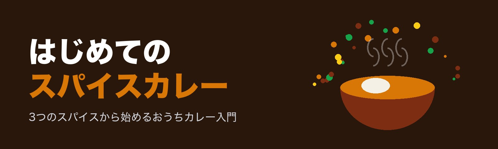

ルウなしで、おうちスパイスカレー。
クミン・コリアンダー・ターメリックの3つから始める、スパイスカレーの入門サイト。基本の作り方、スパイスの役割、道具、アレンジまで。
 基本2026-10-13
基本2026-10-13スパイスカレーの辛さの調整のしかた｜辛くする方法・まろやかにする方法
スパイスカレーの辛さを好みに合わせる方法を解説します。辛さを担当するスパイスの種類と特徴、入れるタイミングによる違い、辛くしすぎたときにまろやかにする方法、家族で辛さを分けるコツや、唐辛子を扱うときの注意点もまとめました。
 レシピ2026-10-13
レシピ2026-10-13基本のチキンカレーの作り方｜3つのスパイスで作るはじめてのスパイスカレー
ターメリック・クミン・コリアンダーの3つのスパイスだけで作る、基本のチキンカレーのレシピです。2〜3人分の材料表と、火加減・時間の目安つきの手順、鶏肉にしっかり火を通すポイントや失敗しやすい点の対策まで解説します。
 道具2026-10-13
道具2026-10-13スパイスカレー作りに向く鍋の選び方｜素材・厚み・サイズの目安
スパイスカレー作りに向く鍋の選び方を、厚み・素材・サイズ・形の観点から解説します。ステンレス多層鍋、ホーロー鍋、フッ素樹脂加工の鍋などの特徴と、2〜3人分を作るときの直径の目安、手持ちの鍋で上手に作るコツをまとめました。
 レシピ2026-10-13
レシピ2026-10-13ダルカレー（豆カレー）の作り方｜レンズ豆で作るやさしい味のレシピ
皮むきレンズ豆で作るダルカレー（豆カレー）のレシピです。浸水なしで作れる手軽さ、2〜3人分の材料表、火加減と時間の目安つきの手順、香りを決める仕上げのテンパリング、とろみの調整や保存のコツまで解説します。
 スパイス2026-10-13
スパイス2026-10-13クミンの使い方と相性のいい食材｜シードとパウダーの活かし方
スパイスカレーに欠かせないクミンの使い方を、シードとパウダーに分けて解説します。香りを引き出す火加減、入れる量の目安、じゃがいもや豆、ひき肉など相性のいい食材、カレー以外の料理への使い方までまとめました。
 レシピ2026-10-13
レシピ2026-10-13キーマカレーの作り方｜ひき肉で手早く作るスパイスカレーのレシピ
ひき肉で作るスパイスのキーマカレーのレシピです。2〜3人分の材料表、火加減と時間の目安つきの手順、水分を飛ばして汁気少なめに仕上げるコツ、ひき肉にしっかり火を通すポイント、アレンジ方法までまとめました。
 基本2026-10-13
基本2026-10-13玉ねぎの炒め方で変わるスパイスカレーの味｜段階別の色と時間の目安
スパイスカレーの味の土台になる玉ねぎの炒め方を、透明・きつね色・あめ色の段階別に解説します。切り方や火加減、焦がさないための水の使い方、時短のコツまで、はじめての人が失敗しにくいポイントをまとめました。
 基本2026-10-13
基本2026-10-13スパイスカレーとルウのカレーの違い｜はじめてでもわかる基本と魅力
スパイスカレーとルウのカレーは、とろみの付け方や味の決め方、香りの出し方が違います。材料・作り方・仕上がりの違いを整理し、はじめてスパイスからカレーを作る人が最初に知っておきたい考え方をわかりやすく解説します。
 スパイス2026-10-13
スパイス2026-10-13スパイスの保存方法と使い切るコツ｜香りを長持ちさせる置き場所
スパイスの香りを長持ちさせる保存方法を解説します。光・熱・湿気・空気を避ける置き場所の選び方、ホールとパウダーの違い、冷蔵庫に入れるときの注意点、買いすぎを防ぐ買い方や、余ったスパイスを使い切るアイデアまでまとめました。
 スパイス2026-10-13
スパイス2026-10-13ホールスパイスとパウダーの使い分け｜入れるタイミングと香りの違い
スパイスカレーで使うホールスパイスとパウダースパイスの違いを、香りの出方・入れるタイミング・火加減の観点から解説します。焦がさないコツや、はじめてそろえるときの選び方、代用するときの注意点もまとめました。